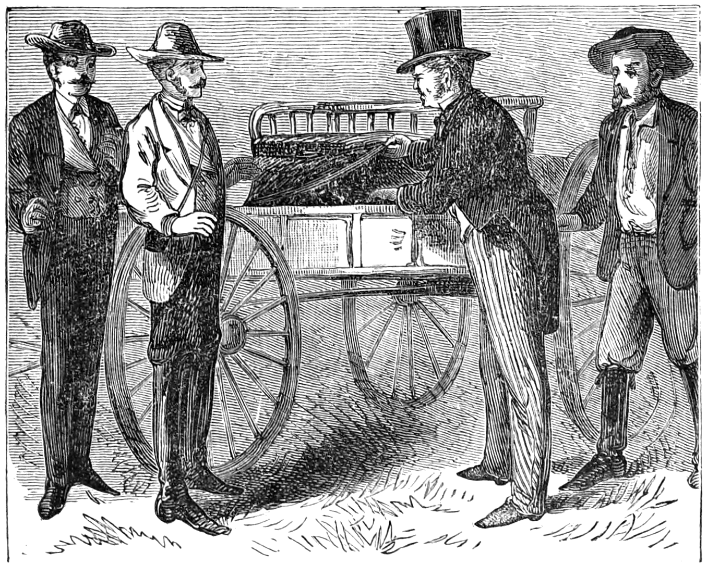
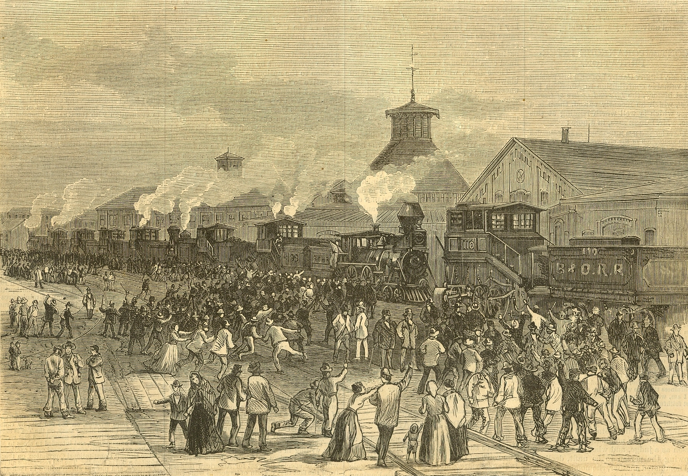

The Gilded Age in the United States (1870-1890)
What is Freedom?
Defining American freedom involves a comparison between the nation's written values and the experiences of the various peoples living in the United States over time. The Declaration of Independence is among the most commonly referenced documents for this purpose. Specifically, the ideology of the "self-evident" truth that "all men are created equal" facilitates the development of a highly ambitious proposal of freedom for those in the U.S., both past and present. However, American history oftentimes exemplifies a contradiction to these values, and non-discriminatory freedom has seldom been consistent, especially during the Gilded Age.
Freedom in the Gilded Age
The Gilded Age pushed one of the greatest negative impacts on the freedom of the people living in the United States. With the rise of corruption in the economic and political sectors of society, the protection of civil liberties and equality was oftentimes highly limited for subordinate groups. Not only so, but even those liberties which were explictily outlined in laws were molded by twisted interpretations at the hands of those with power.
The Freedom of the Working Class and the Growth of Big Businesses
The working class was exposed to inequality mostly due to the influence of ideologies favorable towards dominant groups in society. Specifically, the establishment of laissez-faire capitalism and Social Darwinism as societal norms facilitated a largely unrestrained growth of businesses that limited the freedom of the working class. With owners like J.P Morgan and Andrew Carnegie roaming freely during the age, a strong opposition towards labor unions and worker's civil liberties was almost always a given in normal businesse procedures. One of the most brutal consequences of such inequality was the Great Railroad Strike of 1877, a nationwide opposition to the unfair wages and working conditions of railroad companies. In it, a large group of workers protested against the Baltimore and Ohio Railroad Company in Martinsburg, West Virginia. They specifically fought against unfavorable pay cuts by sabotaging railroad processes, and were eventually met with considerable force by federal troops after militia units proved ineffective. Similarly, during the Homestead Strike of 1892 at Andrew Carnegie's steel mill in Pennsylvania, workers were locked inside of the steelworks by strikebreaker units in opposition to labor protests against low wages and the restriction of unions. The problematic nature of these events proved that a "glass ceiling" of freedom existed for those participating in hard labor. The events also proved that large businesses oftentimes profited at the expense of subordinate groups. As a result of this, companies such as U.S. Steel and Rockefeller's Standard Oil ammassed billions and millions, respectively, in capital throughout the age.